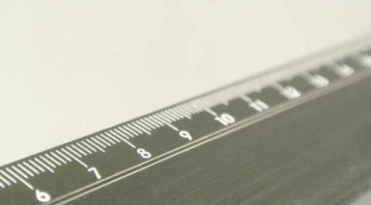

Los números reales son densos, es decir, entre cada dos números reales hay infinitos números reales en medio.
Eso es fácil de deducir, ya que si a, b son dos números con a < b sabemos que a < \(\frac{a+b}{2}\) < b , es decir, la media está entre los dos números. Como esto podemos hacerlo las veces que queramos, pues de ahí el resultado.
Curiosamente los racionales son también densos, así como los irracionales.
Los números los podemos representar en lo que se conoce como la recta real.
Elegido el origen de coordenadas y el tamaño de la unidad (o lo que es igual, si colocamos el 0 y el 1) todo número real ocupa una posición en la recta numérica y al revés, todo punto de la recta se puede hacer corresponder con un número real.
A continuación veremos como representar de forma exacta algunos números reales y hablaremos de una notación especial para referirse a esos infinitos números que hay entre dos números reales dados y que deberás dominar para éste y futuros cursos (los intervalos).